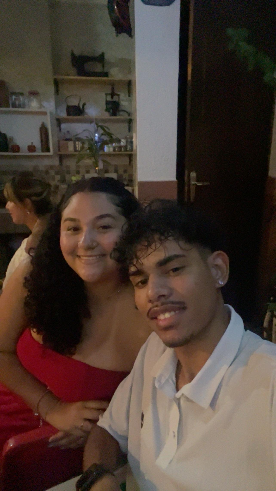
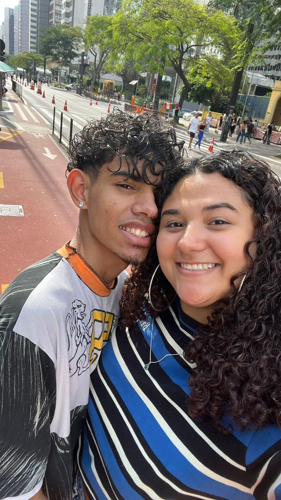
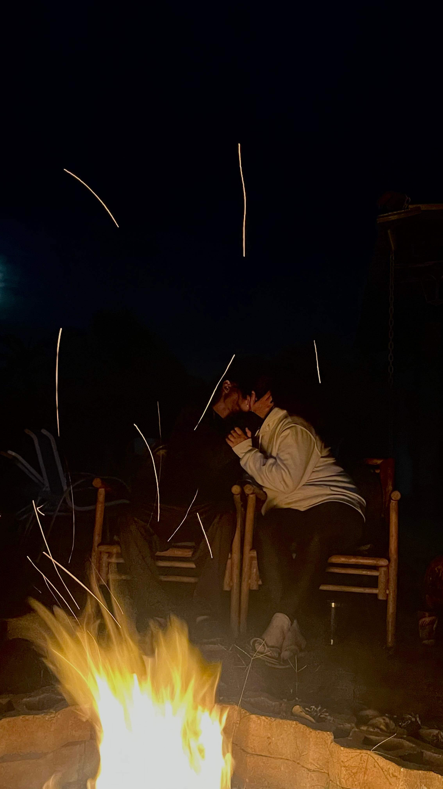
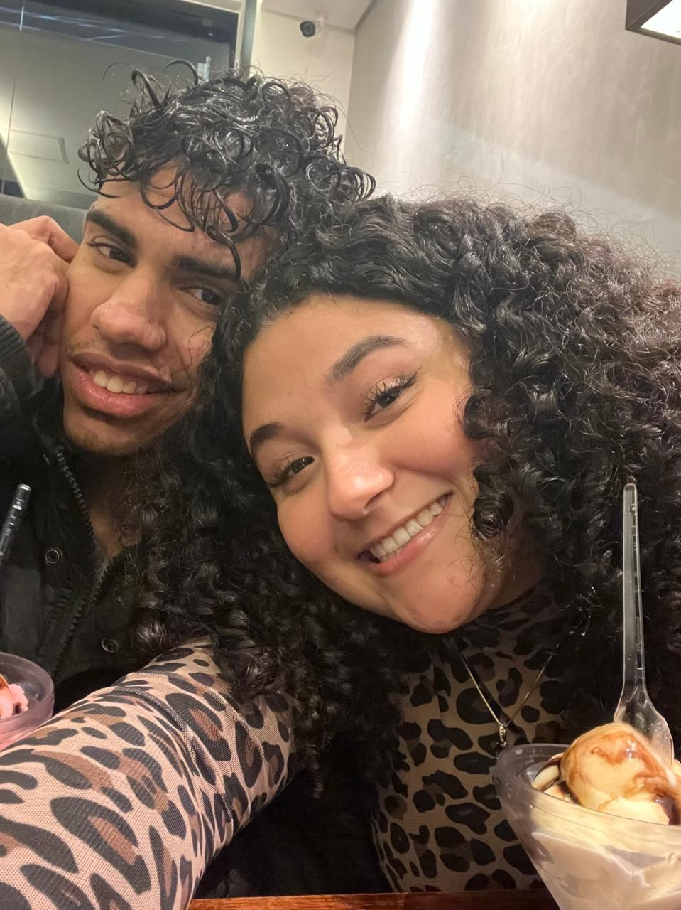
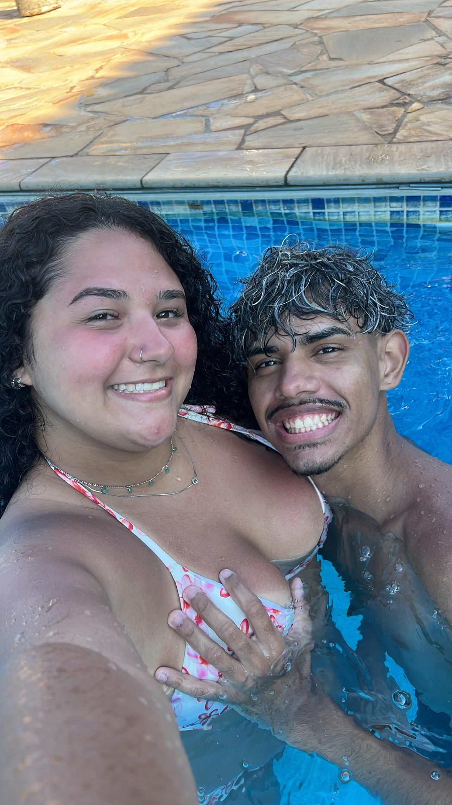
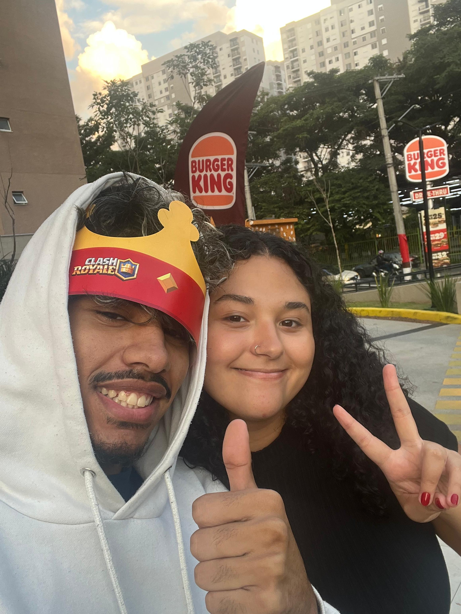

> SISTEMA SINCRONIZADO. AGUARDANDO LIBERAÇÃO DE DADOS...
> PRÓXIMA FASE EM:
STATUS: Ativo. Equipamento de fricção necessário.
ALVO: Setor de Imersão e Desorientação Controlada.
Rua Dr. Alfredo de Castro, 160 Barra Funda – SP
STATUS: Ativo. Desativar modo de combate. Traje civil elegante recomendado.
ALVO: Recuperação energética VIP.
Av. Ermano Marchetti, 1058 - Lapa, São Paulo - SP, 05038-001
DE: COMANDO CENTRAL
PARA: AGENTE VALENTINE
Agente Valentine... ou melhor, meu amor.
A operação de hoje chegou ao fim. Agora não existem mais códigos, disfarces ou firewalls entre nós. Sou só eu, de peito aberto para você.
O nosso roteiro recente teve uma falha de comunicação, um desvio inesperado. Mas aquelas duas semanas em que o sinal caiu me provaram uma coisa: a minha vida só funciona de verdade quando o meu radar está sincronizado com o seu. Nós escolhemos recalibrar a rota e voltar um para o outro, e essa foi a decisão mais certa que já tomamos.
Nós podemos não estar carregando alianças nos dedos agora, mas o que temos é muito mais valioso. O nosso compromisso não precisa de um símbolo de metal para ser real; ele se prova nas nossas escolhas diárias, na nossa vontade de reconstruir e em dias incríveis como o de hoje.
Obrigado por topar as minhas loucuras, por pular de cabeça nas minhas missões e por ser a minha parceira definitiva. Que a gente continue sempre assim: superando as quedas e voltando ainda mais fortes.
Feliz Dia dos Namorados.
Eu te amo, hoje e sempre.
Anderson
> REGISTROS DE MISSÕES PASSADAS (ÁLBUM):






> ARQUIVO DE VÍDEO RESTRITO DETECTADO:
Para carregar o arquivo de mídia, responda:
QUANDO NOS CONHECEMOS?
ERRO: Chave incorreta.